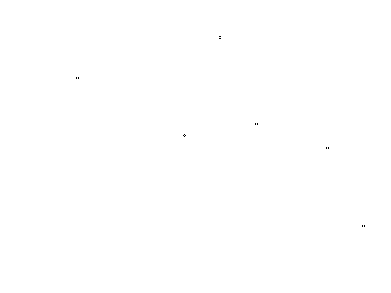

gifski examples
Basics of creating animated gifs with gifski package in R
1. Convert png files to gif
library(gifski)
# set up file paths to save the pngs
png_path <- file.path(tempdir(), "frame%03d.png")open the png connection and plot
png(png_path)
for(i in 1:10)
plot(rnorm(i * 10), main = "", axes = F, ylab = "", xlab = "")
dev.off()## png
## 2make vector of filenames
png_files <- sprintf(png_path, 1:10)
gif_file <- "../../docs/images/gif_example.gif"
gifski(png_files, gif_file, delay = 0.1)##
Frame 1 (10%)
Frame 2 (20%)
Frame 3 (30%)
Frame 4 (40%)
Frame 5 (50%)
Frame 6 (60%)
Frame 7 (70%)
Frame 8 (80%)
Frame 9 (90%)
Frame 10 (100%)
## Finalizing encoding... done!## [1] "J:\\MMU\\R\\web\\r_stuff\\docs\\images\\gif_example.gif"unlink(png_files) # delete files

animated gif image
2 Write direct to gif from an expression
# Here the gif is saved into the specified directory
save_gif({
for(i in 1:10) plot(rnorm(i * 10), main = "", axes =F, frame.plot=TRUE, ylab = "", xlab = "")},
gif_file <- "gif_example.gif", delay = 0.1)##
Frame 1 (10%)
Frame 2 (20%)
Frame 3 (30%)
Frame 4 (40%)
Frame 5 (50%)
Frame 6 (60%)
Frame 7 (70%)
Frame 8 (80%)
Frame 9 (90%)
Frame 10 (100%)
## Finalizing encoding... done!## [1] "J:\\MMU\\R\\web\\r_stuff\\content\\Chapter1\\gif_example.gif"